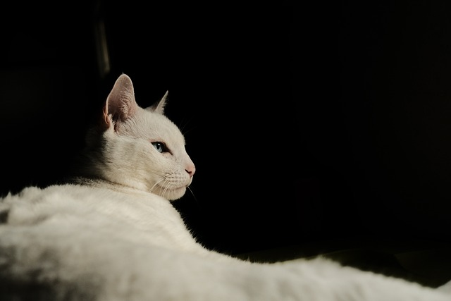
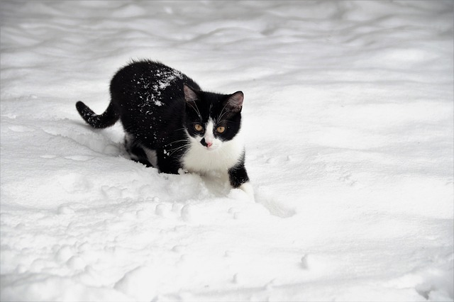

Averiguar cuántas razas de gatos existen en el mundo depende de dónde se busque la información. Los registros internacionales de gatos y otras organizaciones enumeran diferentes calificaciones para las razas que aceptan, y el número total varía entre ellos, aunque hay muchas menos razas de gatos reconocidas que de perros. Según Mis animales, la cifra global de razas de gatos existentes a día de hoy depende en gran medida de la fuente consultada. La Enciclopedia Británica solo recoge 15 razas de gatos, mientras que la Asociación Internacional del Gato, calcula que existen un total de 71 razas estandarizadas. Muchos otros registros y asociaciones reconocidos suelen situarse entre esas dos cifras.
LAS MÁS CONOCIDAS MUNDIALMENTE:
CLASIFICACIÓN SEGÚN SU PELAJE

ATIGRADO

BLANCO

CAREY

GRIS
TRICOLOR

NEGRO
NARANJA

VAQUITA
PÁGINA DEDICADA A TODAS ESAS PERSONAS QUE SE AUTODENOMINAN AMANTES DE LOS GATOS.